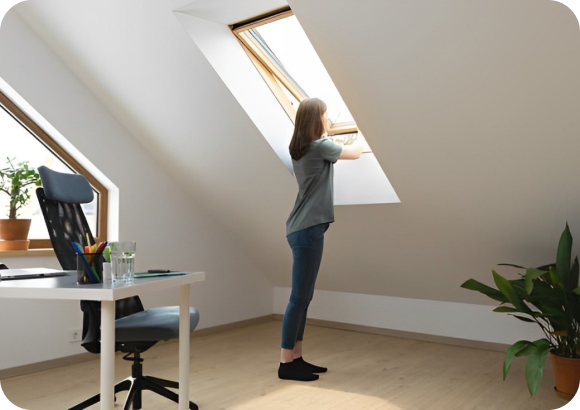
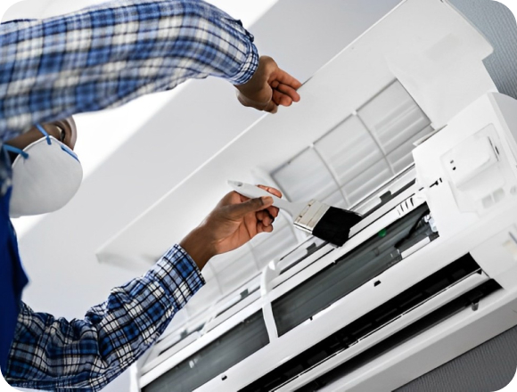
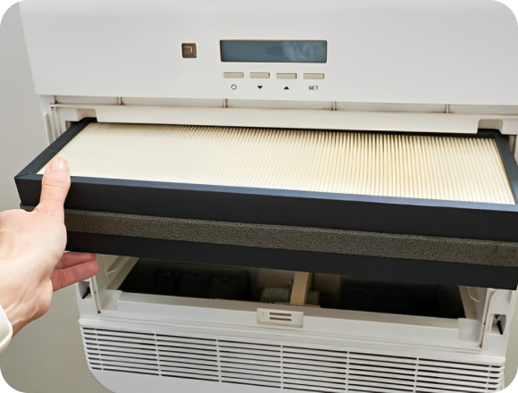

Tips for Maximizing Airflow and Air Quality in Your Workspace
Maintaining optimal airflow and air quality in your workspace is essential for creating a comfortable and productive environment for employees. Proper ventilation and air circulation not only enhance comfort but also reduce the risk of indoor air pollutants and airborne contaminants. In this article, we'll explore practical tips for maximizing airflow and air quality in your workplace to promote a healthier and more enjoyable work environment.
-
Ensure Proper
VentilationProper ventilation is critical for circulating fresh outdoor air and removing stale indoor air, odors, and pollutants. Ensure that your workspace is equipped with adequate ventilation systems, such as HVAC systems with fresh air intake, exhaust fans, or operable windows, to facilitate air exchange and maintain indoor air quality
 -
Clean and Maintain
HVAC SystemsRegular maintenance of HVAC systems is essential for ensuring optimal performance and air quality. Schedule routine inspections, filter changes, and duct cleaning to remove dirt, dust, and debris that can obstruct airflow and compromise indoor air quality. Proper maintenance helps extend the lifespan of HVAC equipment and promotes efficient operation
 -
Use Air Purifiers and
Filtration SystemsConsider installing air purifiers or filtration systems in your workspace to remove airborne pollutants, allergens, and contaminants. High-efficiency particulate air (HEPA) filters, electrostatic filters, or UV-C light air purifiers can help capture and neutralize airborne particles, bacteria, and viruses, improving indoor air quality and reducing the risk of respiratory issues
 -
Extend Equipment Lifespan
Take advantage of natural ventilation whenever possible by opening windows and doors to allow fresh outdoor air to circulate throughout the workspace. Natural ventilation helps dilute indoor air pollutants, regulate humidity levels, and create a more pleasant and inviting indoor environment for employees
-
Maintain Cleanliness
and OrganizationRegular cleaning and organization of the workspace help prevent the accumulation of dust, dirt, and debris that can degrade indoor air quality. Encourage employees to keep their workstations clean and clutter-free, regularly vacuum carpets, and dust surfaces to minimize indoor air pollutants and allergens
-
Control Humidity Levels
Maintaining optimal humidity levels is essential for preventing mold growth, moisture-related issues, and discomfort in the workplace. Use dehumidifiers or humidifiers as needed to control humidity levels within the recommended range (ideally between 30% and 50%) and ensure a comfortable and healthy indoor environment for employees
-
Educate Employees on Indoor
Air QualityProvide employees with training and education on the importance of indoor air quality and simple steps they can take to improve air quality in their workspace. Encourage practices such as proper ventilation, regular cleaning, and avoiding the use of harmful chemicals or pollutants indoors
Maximizing airflow and air quality in your workspace is essential for creating a healthy, comfortable, and productive work environment. By implementing these tips, businesses can promote better indoor air quality, reduce the risk of respiratory issues, and enhance overall employee well-being and satisfaction.